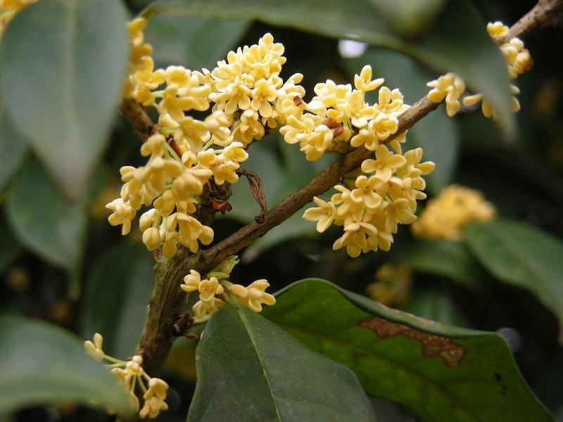

山桂花
捩花目木犀科植物，常绿灌木，高约2米，小枝灰褐色，幼枝红棕色。叶片厚革质，长圆形，宽椭圆形或宽卵形，花序簇生于叶腋或小枝顶端，每腋内具4-8朵花；花芳香；花冠白色，雄蕊着生于花冠管中部。果椭圆状卵形，长1-1.2厘米，呈蓝黑色。花期4-5月，果期9-10月。
产于中国云南、四川、贵州等地。生海拔2100- 3400米的山地、沟边或灌丛中，或杂木林中。

日香桂
桂花的一个园艺品种，因具有不断开花，香气浓郁的特点而得名。
常绿灌木，分枝多、节间短，叶片光滑，色绿，叶缘少齿或无锯齿。花两性，雌雄异株或雄花、两性花异株，花冠白色或黄白色，呈钟状，圆柱形或坛状，裂片4枚，花蕾时呈覆瓦状排列；果为核果，椭圆形或歪斜椭圆形，内果皮坚硬或骨质，常具种子1枚。
日香桂香气四溢，沁人心脾。极具显著的优点是花茎伸出绿叶，能常年有花，并花开不断。
分布于中国东北、华北、福建、广东、广西和海南各地。
晚银桂
常绿性高灌木及小乔木。叶对生，单叶，叶片革质，全缘，两面通常具腺点；具叶柄。花两性，雌雄异株或雄花、两性花异株，花冠浅黄色，呈钟状，圆柱形或坛状，裂片4枚，果为核果，椭圆形或歪斜椭圆形，内果皮坚硬或骨质，常具种子1枚。
晚银桂是中国长江以南地区主要栽培的桂花品种，在当地俗称晚黄。栽培园艺品种，供观赏。
红柄木犀
木犀科木犀属，常绿乔木，干枝粗壮，是桂花的同胞兄弟。其叶墨绿色，边缘具刺状齿，较桂花叶长而宽，且厚实，新叶以主脉凹下，呈船状，成叶展平，叶柄有短柔毛，紫红色。花白色，芳香。
分布于陕西南部、湖北西部、四川东部与湖南北部，主要位于上述四省交界地区的大巴山、巫山以及武陵山区。南京中山植物园有栽培，生长尚好，可以正常开花结果。
红柄木犀由南而北引种栽培，已走进北方园林绿化行列，但主要用于盆栽观赏。
硬叶丹桂
常绿灌木或小乔木。树冠圆球形，枝条峭立，紧密度中等。树皮浅灰色，皮孔圆或椭圆形，数量中等。叶对生，单叶，花两性，雌雄异株或雄花、两性花异株，花冠橙黄色，呈钟状，圆柱形或坛状，裂片4枚，果为核果，椭圆形或歪斜椭圆形，内果皮坚硬或骨质，常具种子1枚。
硬叶丹桂是一个古老的丹桂品种。幼树叶缘锯齿明显，中年以后叶缘锯齿渐少乃至全缘。耐阴性较差。